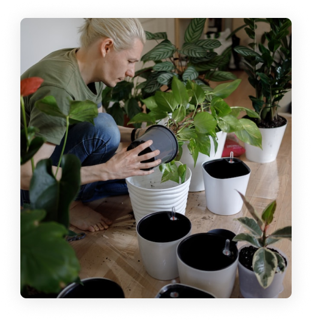

Tem como foco a proteção e a conservação da vida terrestre. Isso significa que o objetivo busca promover o uso sustentável dos recursos naturais e a preservação da biodiversidade em todas as formas de vida que existem no planeta. Para alcançar esse objetivo, é necessário trabalhar em diferentes frentes, desde a implementação de políticas públicas que visem à preservação do meio ambiente até a conscientização da população sobre a importância de proteger as espécies animais e vegetais. A vida terrestre é essencial para a sobrevivência humana, uma vez que é a partir dela que obtemos os recursos naturais que precisamos para a nossa alimentação, vestuário, medicamentos e outros bens essenciais. Além disso, a vida terrestre desempenha um papel fundamental na manutenção do equilíbrio dos ecossistemas e na regulação do clima. Para alcançar o ODS 15, é preciso tomar medidas concretas, como a criação de áreas de conservação ambiental, o controle da exploração predatória de recursos naturais, o estímulo à pesquisa e ao desenvolvimento de tecnologias limpas, além da educação ambiental e da conscientização da população sobre a importância da preservação da vida terrestre. É importante ressaltar que a vida terrestre é um patrimônio de todos e, portanto, a responsabilidade pela sua proteção e conservação é de todos nós. Somente com ações coordenadas e comprometidas será possível garantir um futuro sustentável para as próximas gerações.
Vinícius Souza Girardi